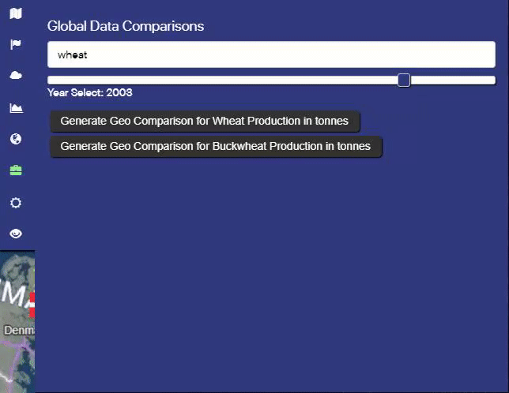
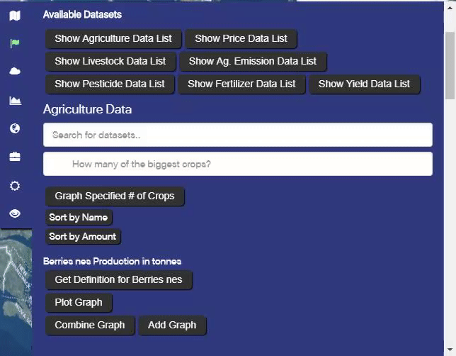
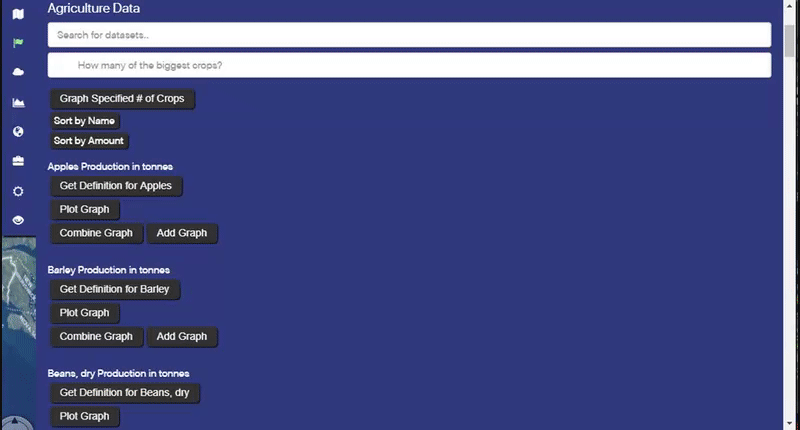
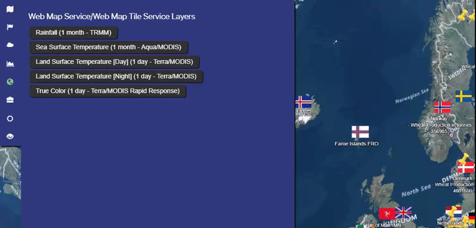

WebWorldWind summer interns arrived at the orientation! They familiarized themselves with the
WorldWind SDK and began brainstorming ideas for a project.
JUNE 10 2017
An Idea is Born
The interns came up with the idea of inspecting the effect of climate on agriculture!
JUNE 2017
Scavenging for Data
They began researching for relevant datasets and making data visible on the 3D globe using the Web World Wind SDK. Development has officially begun.
JULY 2017
Transition to Development
The web app was finessed, where the interns added features such as geocomparison, opacity/time sliders, country-specific data, and improved aesthetics.
July 2017
Deployment
The interns deployed the finished project and website. Yippee!
Be Part
Of Our
Story!
Our Amazing Team
WebWorldWind 2017 Interns
John Nguyen
Lead Developer
Mingda Tang
Lead Designer
Stacey Chen
Lead Savage
Atreya Iyer
Lead Visionary
Outreach
Our coordinations with other University departments, outside agencies and the user community
Project Name
Geo-Comparison Buttons
The Geo-Comparison Buttons allows you to visualise agricultural data on the
globe, allowing you to compare many countries with each other at the same time.
To use, first set the desired year that you want to be compared using the
slider. Next is to select what crop you want to view. You can do this by
either scrolling through the selections or typing in the desired crop
in the search bar. Finally, click on the Geo-Comparison button and
the globe will be colourized.

What the colours mean
To put things loosely, there are 2 main colours with shades in between.
These two colours are red and green. Red represents a low production value
of a particular crop at a particular year. Green represents a high production
value for that particular crop at a particular year for that particular country.
Yellow and orange represents above average and below average productions
respectively. No colour means no data is avaliable.
Technical Details
The colours are generated based on a country's z-score. For instance a
country that produces a crop that is siginficantly above the average will
have a sharp green. While a country that only does this at a slightly above
average production may get a yellow or light green colour. This also applies
to the colour red in which the country produces a crop siginficantly below
average in comparison to other countries. As a result, the colours are based
on a country's value in comparison to other countries. To view actual
production amount, you need to zoom in to the flags.
Project Heading
Country Data and Weather Data
The main feature of AgroSphere is the ability to view agricultural data based
on country using an interactive globe. To view a country's data, first select
a flag. A menu should appear listing the type of data that is avaliable.
Select a data type, for example the agricultural data set. A collection of
buttons and input text areas should then appear. A similar event will happen
when clicking on the yellow pins which represents weather stations.
Searching through the data set
The data set can be filtered by typing the particular desired field. It can
also be filtered by sorting by name (alphabetical order) or by average
(descending order). Sorting by average means the field with the largest average
production over the avaliable years.

Plotting graphs
It is possible to plot individual fields. There are 3 buttons associated with
plotting: plot, combine and add.
Plot is simply plotting the data
on the given active tab.
Add places the graph in the data-graphs tabs. This
allows users to view multiple graphs from multiple countries to be viewed
side by side.
Combine graphs multiple data sets on the same graph on the same
scale.
To remove a graph from the plot button, simply press the hide button that will
appear after plotting. To remove a graph from the data-graphs section,
simply press the remove all graphs button.
Plotting specified number of things
The Graph # of X button allows the user to see the top number of fields on
a year by year basis. Additionally the percentange the top X contributes is
also shown. To modify the amount seen, simply type in the number of fields
wanted. Note that bad-values or the default value is 5. Once a number is chosen,
simply press the graph specified button.

Project Name
Using WTMS Layers
The WTMS layer allows you to view a WMS layer and see how it varies with time.
First, choose a layer that you want to see. Once clicked, a set of options
and controls will appear. First is the opacity slider. To change the opacity
of the layer, simply slide it to the desired value. Next is the associated
legend of the layer if avaliable which tells you the values of the colours.
Next is the time scale. Simply slide to the desired time that you want to
see the data type. For instance, slide to May 31st 2001 if you want to see
data at that particular time.

Finding current weather
The current weather can be found by selecting the Current Weather tab. First
type in the desired city and select the country code. Run the Search Weather
button and the resulting weather details shall be displayed.